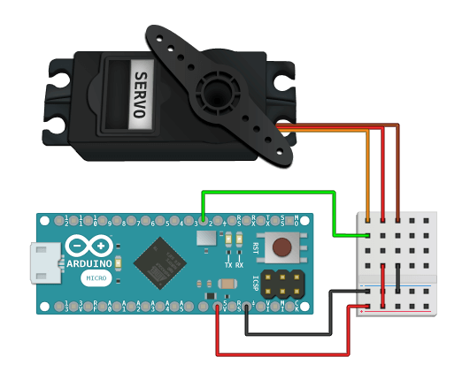

Components
Sensors
Additional Libraries
ServoAPI DOCUMENTATION
Control many servos without delay or interrupts.v1.0.1
How to Install See Example Public MethodsControl many servos without delay or interrupts while applying rotation adjustments with PWM/PPM. Quickly calibrate each servo in the constructor(), then make real-time adjustments to the rotation with moveToDegrees().
Connect as many servos as the number of digital pins available on your Arduino. This library is very fast and has a small, lightweight code footprint.
This library is part of a larger package that you can install to access all of the documented sensors, or you can use this library by itself.
- Download Servo Library v1.0.1 .zipby itself, or
- Download All Sensor Libraries with this library included, or
- View Source on GitHub with MIT license
- Connect the servo red wire to the Arduino +5v pin (or use external power)
- Connect the servo brown or black wire to the Arduino ground pin
- Connect the servo orange or yellow wire to the Arduino digital pin 2
- Load the Example Sketch onto the Arduino
- Watch the servo adjust to the desired position

You must continuously call update() inside of loop() in order to use theReal-Time methods tagged below.
- constructor(pin, pulse_min, pulse_max)
- .setPulseInterval(value)
- .setDegreesOfRotation(value)
- .update()

- .moveToDegrees()Real-Time
Pass in an integer for the digital Arduino pin that is connected to the servo movement control wire (orange or yellow).
For the second and third parameters; pass in unsigned longs for the hardware specified microsecond pulse min and max times, which determine the time limits for calculating the length of the orientation pulse (typically between 1000-2000 microseconds, or 1-2 milliseconds).
EXAMPLE SKETCH
Provide an unsigned long to set the amount of time between each orientation pulse. The default is 20ms and is set automatically in the constructor().
EXAMPLE SKETCH
Provide an integer to set the maximum number of degrees of rotation the servo can handle. The default is 180 degrees and is set automatically in the constructor().
EXAMPLE SKETCH
Keep processing and applying servo movements to the motor. This must be called continuously within loop() in order to use moveToDegrees().
EXAMPLE SKETCH
Provide an integer and the servo will move to the specified position in degrees. This can be called inside of setup() or also at run-time inside of loop().
For performance reasons; you should only call this method once for each change in adjustment requested inside of loop(). This can be done by wrapping this method in a conditional statement and controlling the program flow with the RBD Timer library.